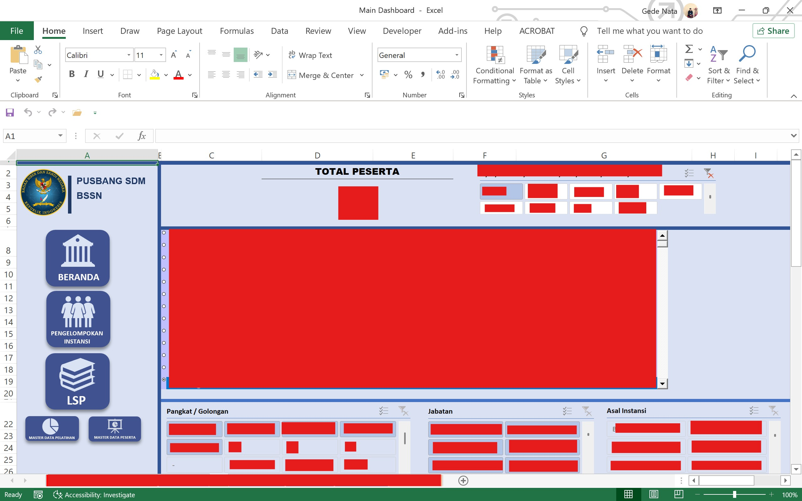
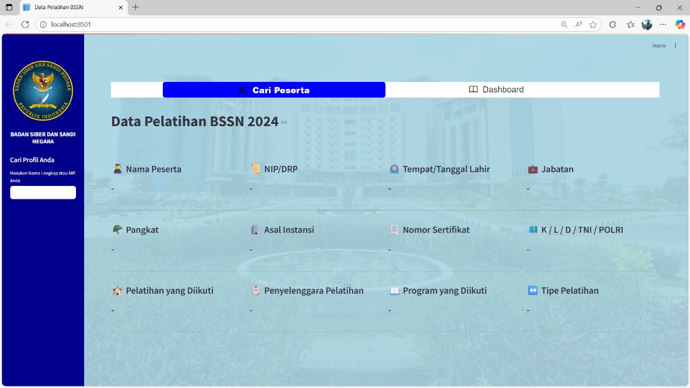

Timeline: Jan 2025 - Mar 2025


This dashboard was created to visualize alumni data using Python, Streamlit, and Excel. It provides interactive insights into alumni demographics, graduation trends, and career paths. The system integrates Excel for efficient data management, cleaning dat and visualize data, Python for data processing, analyst and create dashboard use Streamlit, and Streamlit for building a user-friendly interface that allows stakeholders to explore the data in real time and export reports for further review.
Excel, Python and Streamlit
Back to Portfolio